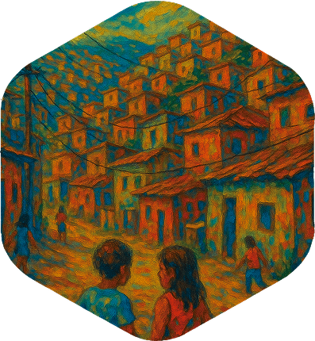
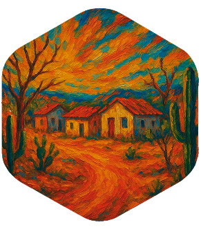

Filtre por estado e veja quantos NUCAs já foram criados e o total de adolescentes cadastrados/as, engajados/das e transformando o seu município e seus arredores nesta edição do Selo UNICEF
Carregando dados nacionais...

...
Adolescentes inscritos/as
...
Municípios com adolescentes inscritos/as
...
NUCAs criados
Os Núcleos de Cidadania de Adolescentes (NUCAs) fazem parte da metodologia do Selo UNICEF e são um indicador essencial da garantia do direito à participação de adolescentes e jovens, assegurando espaço seguro para o desenvolvimento das competências e da cidadania de meninas, menines e meninos em seus territórios.
Este painel interativo reflete o cadastro de adolescentes dos NUCAs na edição do Selo UNICEF 2025-2028. A pessoa mobilizadora deve colaborar com a alimentação desta ferramenta através da utilização dos formulários oficiais de registro de adolescentes. Clique aqui e saiba mais.
Veja o quantitativo de NUCAs criados e o percentual em relação aos municípios inscritos em cada estado nesta edição do Selo UNICEF

Filtre por estado e veja quantos NUCAs já foram criados e o total de adolescentes cadastrados/as, engajados/das e transformando o seu município e seus arredores nesta edição do Selo UNICEF
Carregando dados nacionais...
| Estado | Município | Total de adolescentes | Indígenas | Quilombolas | Ribeirinhos |
|---|

Estes municípios ainda apresentam pendências, como número insuficiente de membros ou falta de paridade de gênero, e terão até o encerramento desta edição do Selo UNICEF para regularizar todas as exigências.
Carregando dados...
| Estado | Município | Total | Feminino | Masculino | Não binário | Status |
|---|